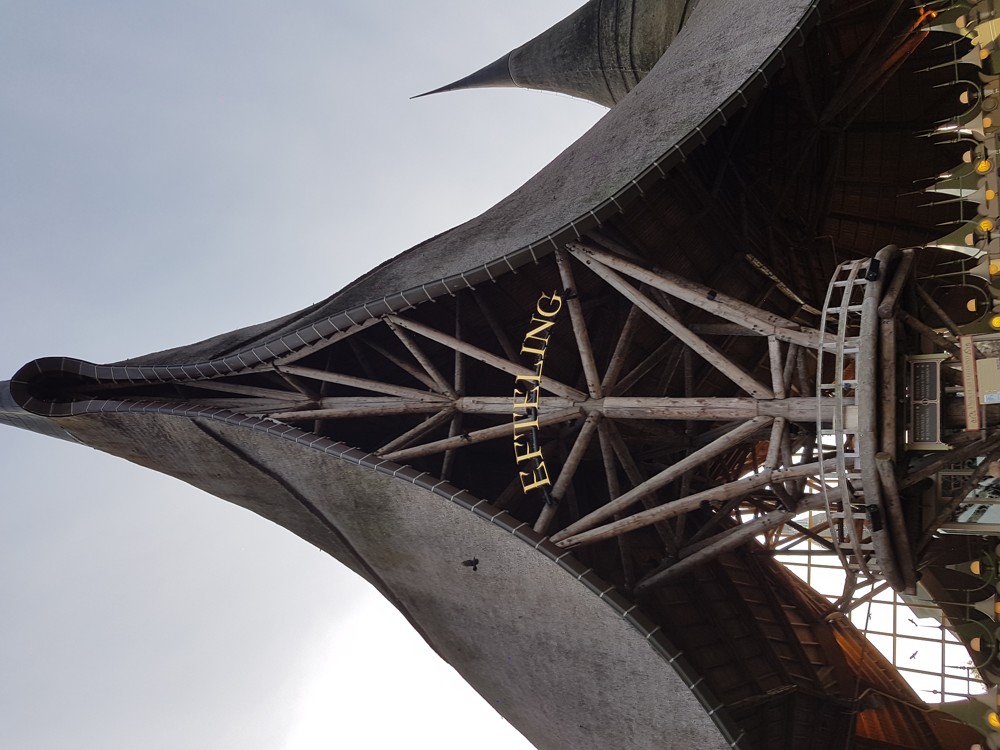
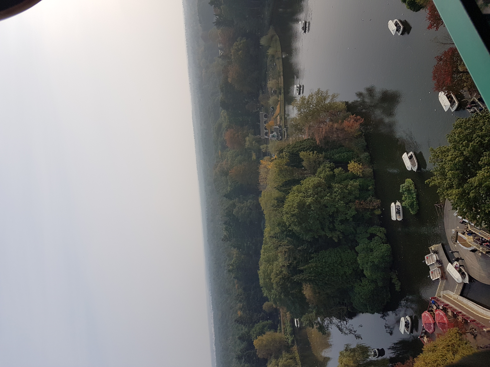
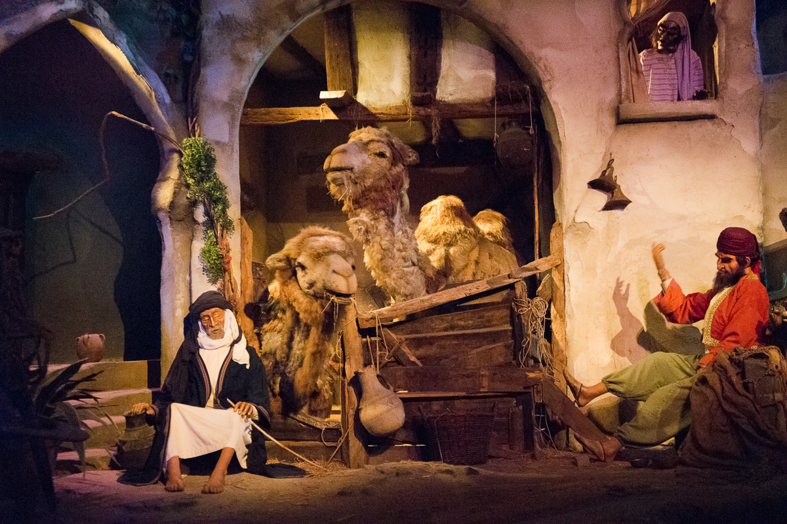
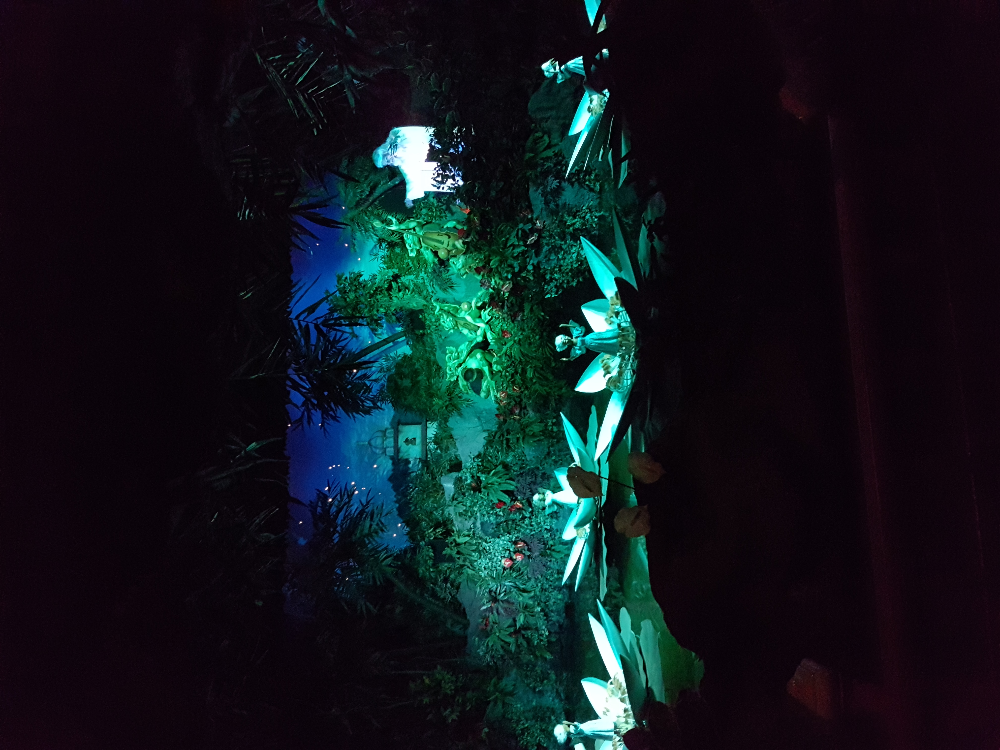
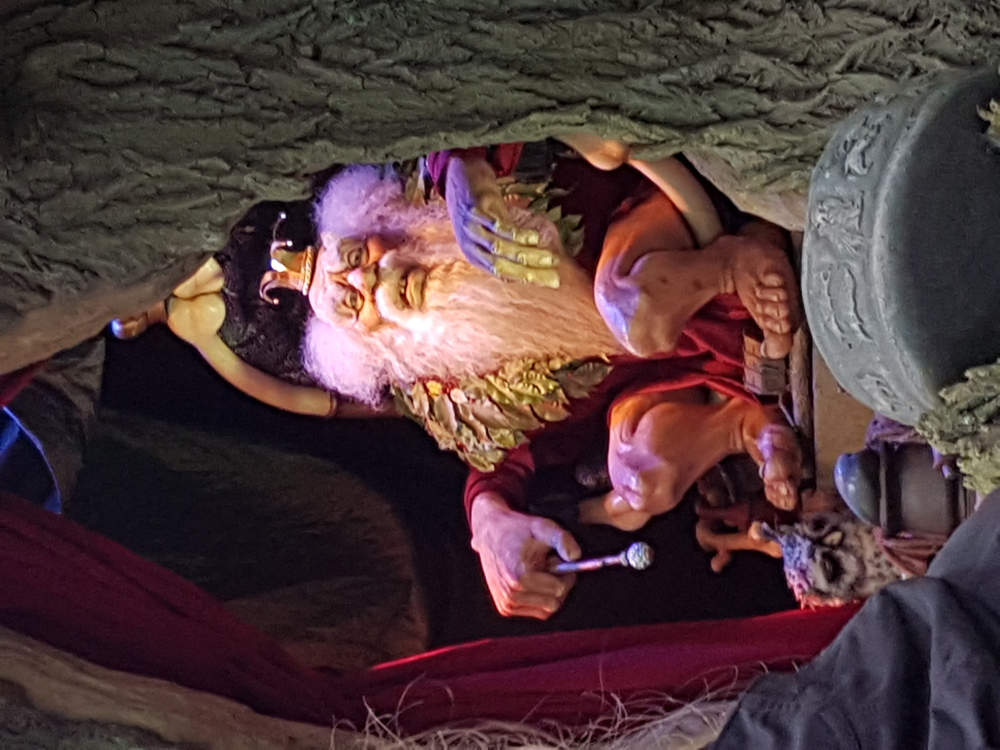
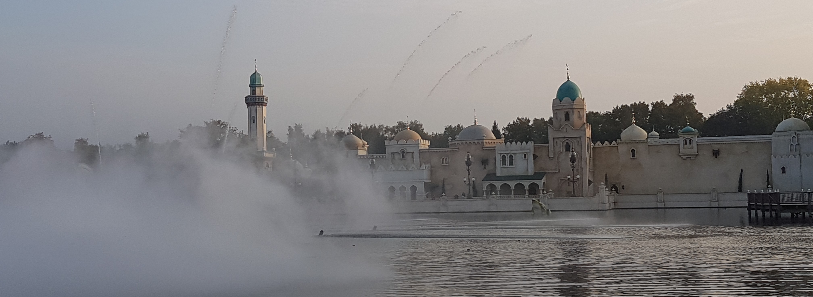

Het was weer zover: ons jaarlijks familie-uitje naar de Efteling!
Eigenlijk is onze ‘familiedag’ altijd ergens in september, maar omdat de rest van de familie het af had laten weten,
vonden we het wel leuk om in de vakantie een dag weg te gaan met het gezin.
We hebben echt een mooie dag uitgekozen, want het was goed weer om een dag in de Efteling door te brengen.
Ook was het totaal niet druk, wat je misschien niet zou verwachten, zo midden in de herfstvakantie.
De langste wachttijd die wij hebben gehad, was 35 minuten.
Hierbij moet ik wel zeggen, dat ik de Efteling app had gedownload. Echt een aanrader!
Hierdoor kun je namelijk precies zien wat de wachttijden per attractie zijn,
waardoor je je dag veel beter kunt inplannen en zoveel mogelijk attracties kunt pakken.
|  | 
|
|---|
Rond 11 uur ‘s ochtends waren we in het park. We zijn eigenlijk meteen richting de droomvlucht gelopen, omdat hier niet zo’n hele lange wachttijd was en we verwachtten dat het ‘s-middags nog veel drukker zou zijn. De droomvlucht vind ik echt een hele mooie attractie en ik wil er ook altijd in als we in de Efteling zijn. Toen we uit de droomvlucht kwamen zijn we doorgelopen naar het vogel rok en de pagode. In de pagode heb ik nog wat foto’s kunnen maken, want dat uitzicht dat je vanuit daar hebt is natuurlijk super mooi.
 |
 |
|---|
Eenmaal uit de Pagode zijn we naar het ruigrijk gegaan. Hier zijn we onder andere in de Baron en de vliegende Hollander geweest. Bij de Python stond een te lange rij en de Joris en de Draak was helaas gesloten vanwege onderhoud. Vervolgens door naar de Bob en de Fata Morgana. De Fata Morgana is ook nog steeds een van mijn favorieten. Ik vind dat ze dit gewoon heel mooi hebben gemaakt en kijk elke keer weer mijn ogen uit!
|  |  |
|---|
Aan het eind van de dag zijn we weer een keer het sprookjesbos in geweest, op mijn verzoek!
Ik vond het namelijk wel leuk om er weer eens doorheen te lopen en ik wilde ook heel graag nog langs de Indische waterlelies,
omdat ik dit vroeger heel mooi vond.
Uiteindelijk zijn we richting de uitgang gelopen en toen begon de show Aquanura, waar we nog een hele tijd hebben staan kijken.
Het was een super geslaagde dag!
 |
 |
|---|
|  |  |
|---|

Uiteindelijk zijn we richting de uitgang gelopen en toen begon de show Aquanura, waar we nog een hele tijd hebben staan kijken. Het was een super geslaagde dag!
x Fenna